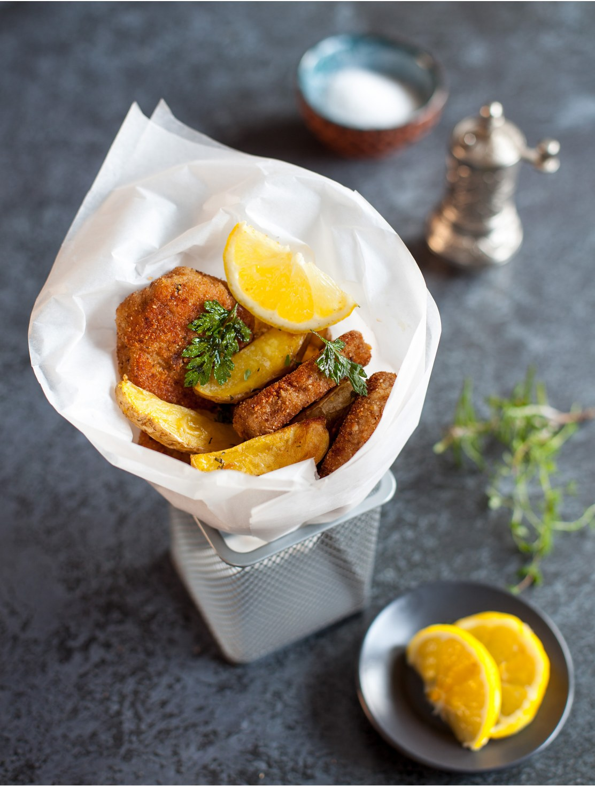

Мясо в панировке с запеченным картофелем — универсальное блюдо, которое обожают как взрослые, так и дети. Оно дает почувствовать, что мы с ними на одной волне. А поданное в формате стритфуда, в бумажном конверте, оно привлечет еще больше внимания.
Простой рецепт, минимум подготовки и нарезки продуктов, никаких сложных манипуляций. Пока вы занимаетесь шницелями, гарнир запекается в духовке. Если планируете готовить сразу много, чтобы ускорить процесс, можно обжаривать одновременно на двух сковородках.
Традиционно шницели обжариваются в большом количестве рафинированного масла или жире во фритюрнице, но мы предлагаем использовать топленое масло в разумных объемах.
Для шницелей мы берем постную свиную вырезку, но можно приготовить шницели и из филе куриной грудки или бедер.
В качестве панировки можно использовать классические панировочные сухари из пшеничной муки либо панировку панко (ищите в магазинах азиатских продуктов), либо рисовые хлопья и рисовую муку, если придерживаетесь безглютеновой диеты. У меня сухари домашнего приготовления из хлеба на сыворотке.
Ароматная соль — универсальная приправа. Рекомендую взять ее на заметку и сделать чуть в большем количестве, чем требуется по рецепту. Потому что этой солью можно приправлять практически все что угодно, не только картофель, но и рыбу, мясо, ломтики овощей перед запеканием. Хранить ее лучше в холодильнике.
Еще один маленький нюанс выведет блюдо на новый уровень — чипсы из петрушки. Впрочем, это необязательный ингредиент.
для ароматной соли: